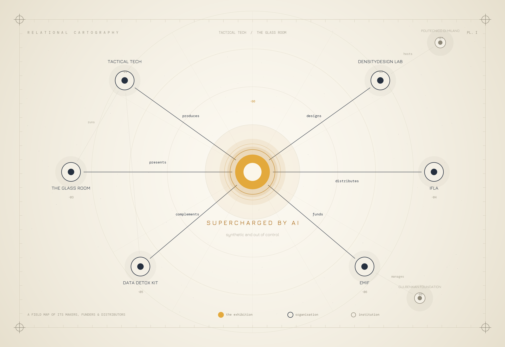

Field notes
Tactical Tech
A Berlin-based non-profit turning the abstract harms of digital life — surveillance, disinformation, algorithmic bias — into things you can see, walk around, and reason about.
Founded in 2003, Tactical Tech investigates how digital technology shapes society, privacy, and individual autonomy. Instead of dense policy reports, it builds playful, design-led public interventions — exhibitions, toolkits, and guides — that make complex technology legible to a general audience.
It treats information design as a civic tool. Flagship projects like The Glass Room and the Data Detox Kit turn invisible systems into something tangible — reaching tens of millions of people, in more than 45 languages.
The exhibition
A 2024 traveling exhibition built on a single thesis: AI doesn't invent online harms — it amplifies the ones that already exist. Scams, harassment, polarisation, and bias are all being “supercharged” by generative tools that make fabrication faster, cheaper, and harder to detect.
Produced by Tactical Tech with the DensityDesign Lab at Politecnico di Milano and the International Federation of Library Associations (IFLA), it has traveled through 50+ libraries across at least ten European countries.
Four chapters · data visualisation as the core language
Online scams
AI-written phishing, cloned voices, and synthetic identities that scale fraud to industrial size.
Harassment
Doxxing, sextortion, deepfakes, and mobbing — mapped as one interlocking network rather than a list.
Political influence
Synthetic media and targeting that quietly shape opinion, behaviour, and the information we trust.
Stereotyping
Models trained on biased data that reproduce and amplify that bias, with consequences beyond the screen.
In one panel, harassment isn't a list — it's a constellation. Forms like doxxing, deepfakes, and cyberstalking are wired together to show how they overlap and feed one another.

Resources